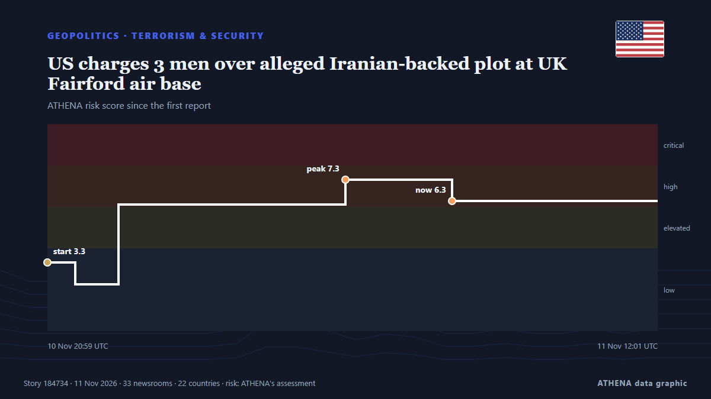

US charges 3 men over alleged Iranian-backed plot at UK Fairford air base

The men, including one who is already in jail, face charges over alleged plot at UK air base used in US war on Iran. από Al Jazeera English
Αναφέρθηκε ανεξάρτητα από 38 μέσα σε 24 χώρες από τις 10 Νοε, πρώτο το US Department of Justice news· η κάλυψη εξασθενεί. Το ATHENA εκτιμά τον κίνδυνο υψηλό (6.5/10), κυρίως λόγω της σοβαρότητάς του και της εμβέλειάς του. Βεβαιότητα 92% (υψηλή): το επιβεβαιώνουν 38 ανεξάρτητα μέσα, μέση αξιοπιστία 76%. Μέσα ανά χώρα: Ηνωμένες Πολιτείες (10), Ηνωμένο Βασίλειο (4), Σαουδική Αραβία (2). Κάλυψη: 10 Νοε έως 11 Νοε, 30 ώρες.
Γιατί έχει σημασία: Οι εξελίξεις στην ασφάλεια και τη διπλωματία μπορούν να μετατοπίσουν συμμαχίες, εμπόριο και αγορές πολύ πέρα από τις χώρες που εμπλέκονται.
Τι άλλαξε: 40 νέες αναφορές από 36 μέσα στο 24ωρο έως 11 Νοε.
Πρώτη διατύπωση: Iran-backed militant helped plot attack on UK's Fairford base from US jail, Justice Department says
Οι τίτλοι των ειδήσεων παρουσιάζονται στα αγγλικά, όπως δημοσιεύτηκαν.
Πώς να διαβάσετε αυτή τη σελίδα
- Τι διαβάζετε
- 38 μέσα σε 24 χώρες ανέφεραν αυτό το γεγονός. Οι αναφορές παρακάτω εμφανίζονται με τη σειρά που δημοσιεύτηκαν· κάθε τίτλος ανοίγει το αρχικό άρθρο. Το ATHENA δεν γράφει δικά του ρεπορτάζ.
- Η εκτίμησή μας
- Για την καταγραφή — Οι αναφορές περιγράφουν ένα ολοκληρωμένο, εσωτερικό, εμπορικό ή προσωπικό ζήτημα. Το καταγράφουμε ώστε να βλέπετε ποιος το ανέφερε και πότε. Δεν παρακολουθούμε εδώ κίνδυνο ευρύτερης σύγκρουσης.
- Πόσα στοιχεία υπάρχουν
- Ισχυρή Πολλά ανεξάρτητα μέσα σε πολλές χώρες περιγράφουν το ίδιο γεγονός.
Αφού αφαιρεθούν οι επαναλήψεις, τα άσχετα και τα παλιά στοιχεία, υπολογίζονται 29 από τις 40 αναφορές που παρατίθενται· το 98% των τίτλων αντιστοιχεί στο γεγονός.
- Τι δεν σημαίνει
- Το ATHENA μετρά πώς καλύπτεται ένα γεγονός, όχι αν είναι αληθές. Δεν είναι πρόβλεψη, κρίση για το ποιος έχει δίκιο ή συμβουλή.
- Τι θα την άλλαζε
- Αναφορές από άλλα ανεξάρτητα μέσα που δείχνουν διαφορετική εξέλιξη, ή σαφής επιβεβαίωση ή διάψευση από επίσημη πηγή.
Εκτίμηση R2 · ανανεώνεται με κάθε ενημέρωση της σελίδας. Το ATHENA δεν έχει δημοσιεύσει ακόμη ιστορικό επιδόσεων για αυτές τις εκτιμήσεις· όταν το κάνει, θα συνδέεται εδώ.
Με μια ματιά
Επιλέγεται, βαθμολογείται και γράφεται από τη δημοσιευμένη μεθοδολογία του ATHENA. Κανένας συντάκτης δεν παρεμβαίνει σε μεμονωμένα γεγονότα. Πώς παράγεται ›
| 10 Nov 12:00 UTC | 1 |
|---|---|
| 10 Nov 14:00 UTC | 0 |
| 10 Nov 16:00 UTC | 0 |
| 10 Nov 18:00 UTC | 0 |
| 10 Nov 20:00 UTC | 9 |
| 10 Nov 22:00 UTC | 13 |
| 11 Nov 00:00 UTC | 7 |
| 11 Nov 02:00 UTC | 3 |
| 11 Nov 04:00 UTC | 2 |
| 11 Nov 06:00 UTC | 1 |
| 11 Nov 08:00 UTC | 1 |
| 11 Nov 10:00 UTC | 2 |
| 11 Nov 12:00 UTC | 0 |
| 11 Nov 14:00 UTC | 0 |
| 11 Nov 16:00 UTC | 1 |
| 11 Nov 18:00 UTC | 1 |
| 10 Nov 20:59 UTC | 3.3 |
|---|---|
| 10 Nov 21:40 UTC | 2.2 |
| 10 Nov 22:44 UTC | 6.1 |
| 11 Nov 04:20 UTC | 7.3 |
| 11 Nov 06:57 UTC | 6.3 |
| 11 Nov 14:18 UTC | 6.7 |
| 11 Nov 19:24 UTC | 6.5 |
Γιατί αυτοί οι αριθμοί
Σημασία
Κίνδυνος
Βεβαιότητα
Η κάλυψη — ποιος το ανέφερε και πότε
ο τίτλος όπως δημοσιεύτηκε · ανοίγει το πρωτότυπο- US Department of Justice news · Ηνωμένες ΠολιτείεςThree Iranian-Backed Operatives Indicted for Their Roles in Nearly 20 Terrorist Attacks and Attempted Attacks Across Europe and the United States
- The Straits Times · ΣιγκαπούρηUS charges three alleged Iranian operatives over UK airbase plot
- Arab News · Σαουδική ΑραβίαIran-backed militant helped plot attack on UK’s Fairford base from US jail, Justice Department says
- ABC News Australia · ΑυστραλίαUS charges three men over terror plots, including planned assault on UK airbase
- Middle East Eye · INTUS charges three 'Iranian operatives' over UK air base plot
- The Independent · Ηνωμένο ΒασίλειοUS charges 3 men with plotting terror attacks at RAF Fairford and other sites
- TRT World · ΤουρκίαUS charges 3 with plotting 'terror attacks' on UK's RAF Fairford airbase
- Al-Monitor · Ηνωμένες ΠολιτείεςIran-backed militant helped plot attack on UK's Fairford base from US jail, Justice Department says
- The Guardian · Ηνωμένο ΒασίλειοUS prosecutors charge Iranian operative allegedly responsible for UK air force base attack
- CBS News (World) · Ηνωμένες Πολιτείες3 Iran-backed operatives indicted for alleged role in terror plots
- TheJournal.ie · ΙρλανδίαUS charges three 'Iranian operatives' over alleged terrorist plot at RAF base in England
- PBS NewsHour World · Ηνωμένες ΠολιτείεςU.S. charges 3 men with plotting terror attacks, including planned assault on UK airbase
- The National · Ηνωμένα Αραβικά ΕμιράταUS charges three men over alleged Iran-backed terror plots, including at RAF Fairford
- Free Malaysia Today · ΜαλαισίαUS charges three ‘Iranian operatives’ over UK airbase plot
- France 24 English · ΓαλλίαUS charges three 'Iranian operatives' over RAF Fairford terror plot
- Al-Monitor · Ηνωμένες ΠολιτείεςUS charges three 'Iranian operatives' over UK airbase plot
- NDTV · ΙνδίαUS Charges 3 'Iranian Operatives' Over Alleged Terrorist Plot At UK Airbase
- Gulf News · Ηνωμένα Αραβικά ΕμιράταUS names, charges three 'Iranian operatives' over UK airbase plot
- CBC News (alternative feed) · Καναδάς3 charged in U.S. with planning terror attacks, including alleged planned assault on British airbase
- Courthouse News · Ηνωμένες ΠολιτείεςFeds: Accused Iran-backed terrorist plotted UK air base attack from NYC prison
- DW English · ΓερμανίαUS charges 3 alleged Iranian operatives over plots targeting Jewish communities and a UK airbase
- The Jerusalem Post · ΙσραήλUS Justice Department: Iran-backed group member helped plan attack on UK air base while in prison
- PBS NewsHour World · Ηνωμένες ΠολιτείεςNews Wrap: U.S. charges 3 with plotting attacks
- Iran International (English) · ΙράνIran-backed operative plotted attack on US base in Britain from NY prison
- The Age · ΑυστραλίαThree charged with plotting attacks on RAF base, Jewish communities for Iran
- BBC News · Ηνωμένο ΒασίλειοThree Iran-backed suspects plotted attacks including RAF Fairford incident, US says
- NBC News (World) · Ηνωμένες ΠολιτείεςU.S. charges 3 men with plotting multiple terror attacks, including on British air base
- MyJoyOnline · ΓκάναThree Iran-backed suspects plotted attacks including RAF Fairford incident, US says
- Bangkok Post — page reader · ΤαϊλάνδηUS charges three 'Iranian operatives' over UK airbase plot
- Al Jazeera English · ΚατάρUS charges 3 men over alleged Iranian-backed plot at UK Fairford air base
- The Korea Times · Νότια ΚορέαUS charges 3 men with plotting terror attacks, including planned assault on UK air base
- The Business Standard (Bangladesh) (working feed) · ΜπανγκλαντέςUS indicts three Iran-backed operatives over alleged plots in Europe and United States
- Times of India · ΙνδίαCoded calls from Brooklyn jail: How Iran operative directed terror plots in Europe, US
- Al Jazeera English · ΚατάρUS charges three men for allegedly plotting attack on UK base
- Khaama Press · ΑφγανιστάνUS Indicts Three Iran-Linked Men Over Alleged Plot to Attack American Aircraft at UK Air Base
- Asharq Al-Awsat (English) · Σαουδική ΑραβίαUS Charges 3 Men with Plotting Terror Attacks, Including Planned Assault on UK Air Base
- Egypt Independent · ΑίγυπτοςIranian operative used coded messages on NY jail call to direct failed UK terror plot
- NPR · Ηνωμένες ΠολιτείεςAn Iran-backed trio is accused of plotting attacks on a U.K. base hosting U.S. jets
- The Independent · Ηνωμένο ΒασίλειοRAF Fairford organiser ‘orchestrated terror plot on Facetime’
- The National Interest · Ηνωμένες ΠολιτείεςDoJ Charges Three Men with Iran-Backed Terror Plot—Two Still at Large